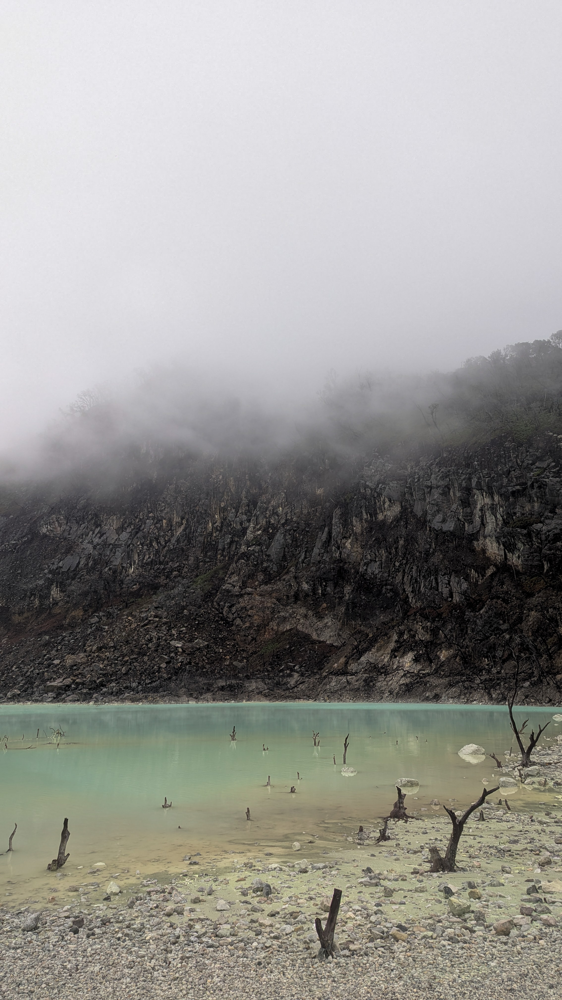
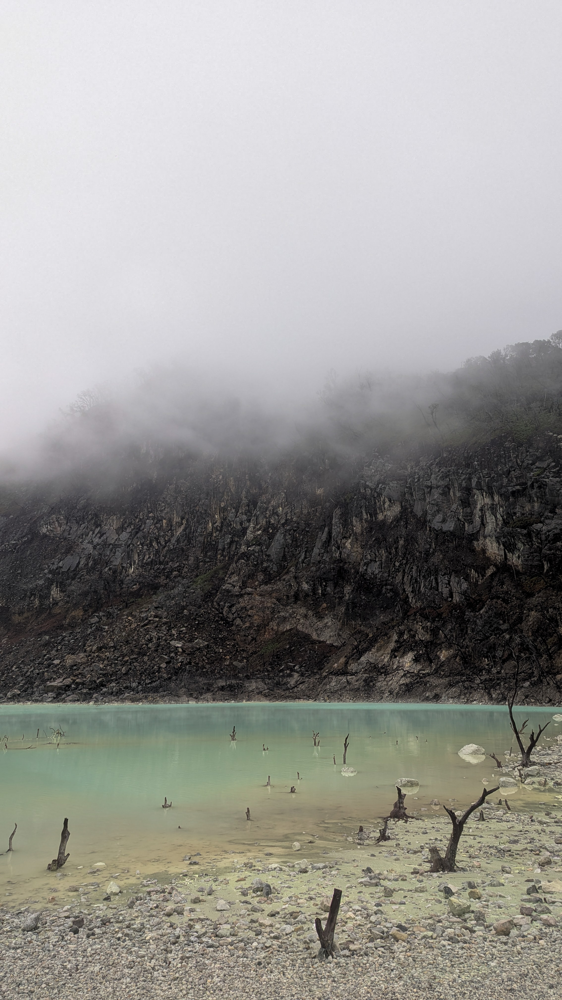
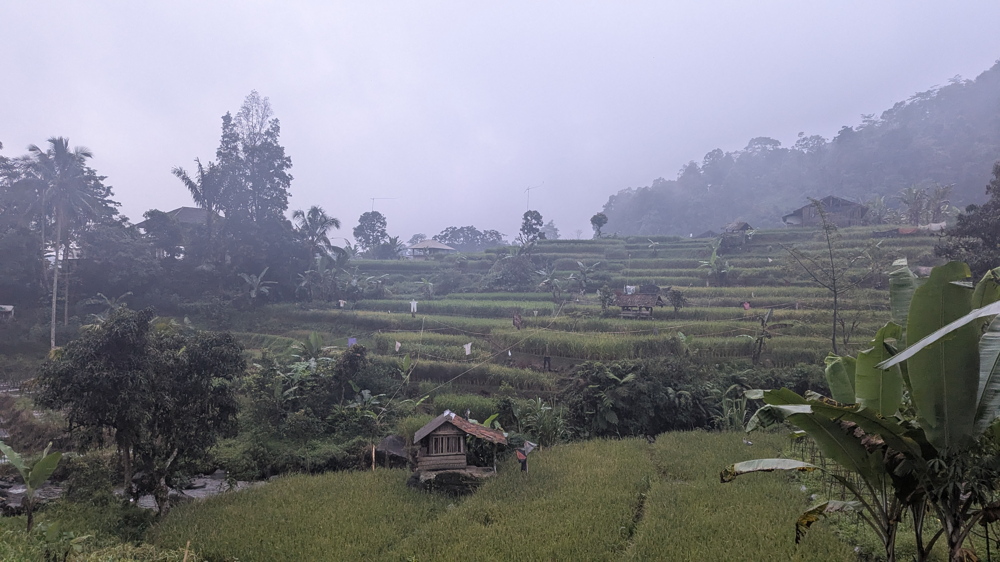
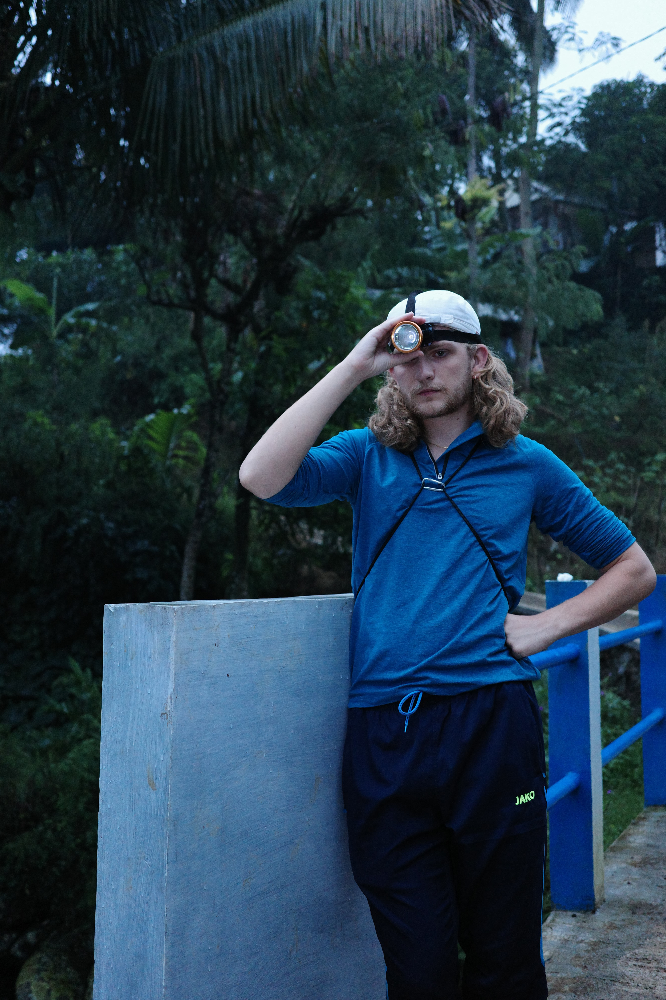
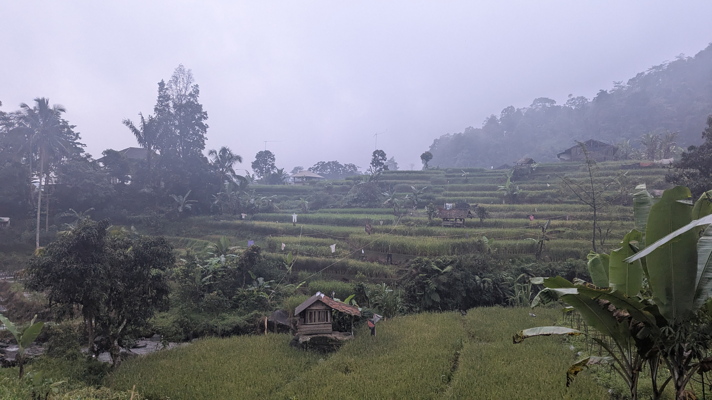
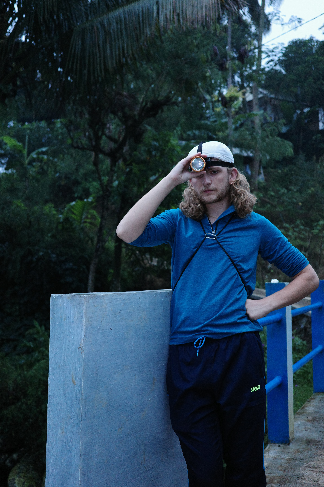

Go to Bandung !
10/07/2025
Ça, c'est nous !
1 Coréenne, 1 Argentin, 1 Gabonaise, 1 Angolais et 2 Français avec un seul plan : passer 4 jours incroyables à Bandung.
Et spoiler : je crois qu’on a réussi.
Jour 1 : White Crater
1h30 de voiture et on arrive à la ville de Ciwidey. Là-bas : des plantations de fraises à perte de vue, un resto typique avec une superbe vue, on mange bien, on est prêts pour le White Crater.
Allez, c’est le moment histoire :
Le Kawah Putih (White Crater) s’est formé après une éruption du mont Patuha au Xe siècle. À cause de légendes et de la mort d’oiseaux au-dessus du lac, les habitants pensaient que l’endroit était hanté. En 1837, un scientifique du nom de Junghuhn a osé s’y rendre et a découvert un lac à l’eau très blanche, à cause du soufre. Les Néerlandais ont ensuite installé une usine pour l’exploiter. Aujourd’hui, c’est un site touristique très connu pour son paysage volcanique impressionnant. 

Il y avait beaucoup de visiteurs, mais c’était tout de même super beau. On n’oublie pas la petite image mentale pour graver ça dans notre tête avant de repartir.
Jour 2 : Curug Cibareubeuy
La journée a commencé en beauté avec un spectacle de danse traditionnelle, de marionnettes et un concert d’instruments en bambou.
C’était hyper vivant et coloré, on ne savait plus où regarder ! J’ai même appris à jouer du Angklung,
puis on s’est tous levés pour danser avec les artistes et le public. Ambiance bonne humeur assurée,
parfait pour se mettre dans l’ambiance avant d’aller découvrir le White Crater.
Et merci à Isa, la danseuse qui m’a entraînée sur la piste et m’a appris quelques pas avec le sourire.

À cause du trafic, nous sommes arrivés en retard, la nuit commençait à tomber. Avec 4 lampes torches prêtées par les locaux, on a commencé la balade. Boue à nos pieds, rizières sous nos yeux, tout en croisant des gens du coin qui faisaient demi-tour.
 



Une longue conversation avec une locale tellement souriante en indonésien qui, je pense, essayait de nous expliquer que le reste du chemin était inondé.
La nuit tombe, on ne va pas jusqu’au bout pour des raisons de sécurité.
Mais on repart avec encore plus de motivation pour la suite. Et peut-être une future visite de cascade autour de Jakarta.
Jour 3 : Papandayan
À peine arrivés sur le chemin de rando à 9h qu’on est déjà des stars. On s’arrête régulièrement pour faire des photos avec les locaux. En Indonésie, c’est normal, mais là, en une journée, jamais autant de gens ne nous en avaient demandé. 😊
Alors, on continue de monter. Le paysage est magnifique, petit repas de nouilles à mi-chemin avec une vue à couper le souffle, des nouvelles amitiés avec des enfants curieux. Des discussions entre nous, plus ou moins profondes (c’est ce que j’adore dans les randos). On dépose notre petit caillou sur un cairn avant de redescendre.
J’aime les galères !
Une des particularités de ce voyage, c’est qu’on a eu pas mal de galères… et souvent les mêmes.
Mais que de belles galères.
Petite explication pour comprendre : en Indonésie, pas d’Uber ni de taxi classique. On prend Grab, en voiture ou en scooter, que ce soit pour 5 minutes ou 4 heures de trajet.
Mais point important dont personne ne parle : ce n’est pas parce qu’un Grab vous dépose à un endroit qu’un autre pourra venir vous chercher ensuite (surtout si c’est très reculé) !
Après la balade de Curug Cibareubeuy, perdus dans un village, aucun Grab ne répond. On demande de l’aide à des locaux (incroyablement gentils). Et c’est comme ça qu’on se retrouve à payer un inconnu qui nous ramène dans sa camionnette sans porte ni ceinture jusqu’à la ville la plus proche.
À Papandayan, rebelote : personne pour venir nous chercher. On se retrouve à un poste de sécurité, et là, un des employés nous propose un plan en 3 étapes :
- Il nous emmène chez lui en scoot avec 3 potes (on était quatre).
- Il récupère sa voiture et nous emmène jusqu’à la ville la plus proche (environ 1h).
- Et enfin, on prend un Grab.
Ce que je ne savais pas en acceptant ce plan, c’est que j’allais vivre l’un de mes plus beaux souvenirs : traverser la campagne de Bandung et les rizières, de nuit, dans le brouillard et sous la pluie, à moto (sans casque). Un moment complètement hors du temps, indescriptible. Une sensation que je voudrais revivre, et que je n’oublierai jamais.
En plus, il nous a même invités à attendre chez lui, et on a rencontré rapidement sa famille.
Qu’est-ce que j’ai aimé ces galères : parler, rire, apprendre, que ce soit entre nous ou avec les gens rencontrés sur notre chemin.
Alors si vous cherchez des conseils pour un voyage bien organisé… s’adresser à nous est peut-être une erreur 😅.
Mais si vous voulez créer vos meilleurs souvenirs, ceux que personne ne pourra copier…
Alors il ne vous reste plus qu’à suivre notre équipe de bras cassés. 💚